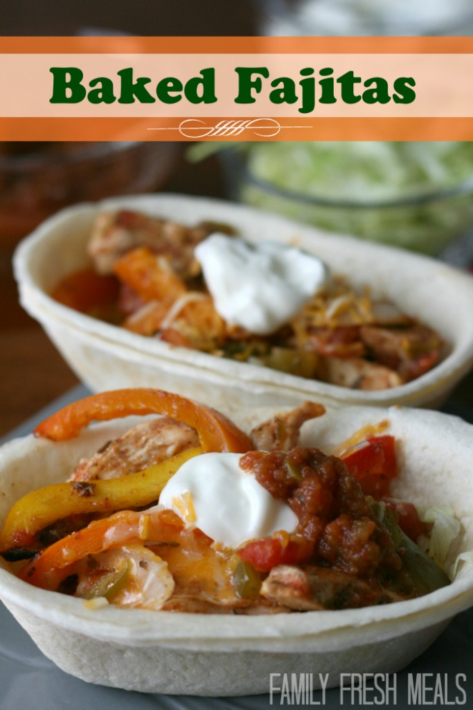

Baked Fajitas

Original Recipe Site
Description
Ok people. This is the EASIEST way to make fajitas. My family and I have fallen in love with these Baked Fajitas and they have taken over our Taco Tuesdays. This recipe also works great with Darryl’s vegetarian soy chicken strips!
Ingredients
- 1 pound boneless skinless chicken breasts, cut into strips
- 1 15oz can diced tomatoes
- 1 4oz can diced green chilies
- 1 small onion, sliced
- 2 cups bell pepper, seeded and sliced (I used 3 small, different colored peppers)
- 2 tbsp vegetable oil
- 2 tsp chili powder
- 2 tsp cumin
- 1/2 tsp garlic powder
- 1/2 tsp dried oregano
- 1/4 tsp salt
- 1/2 tsp lime juice